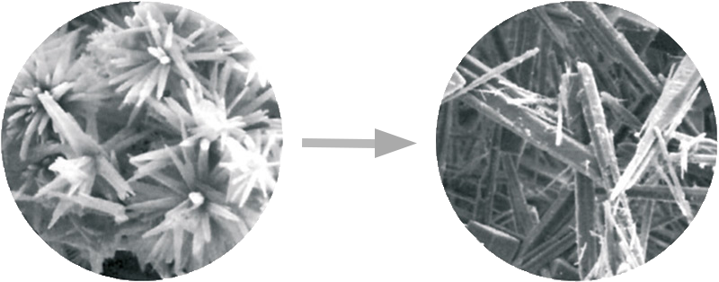
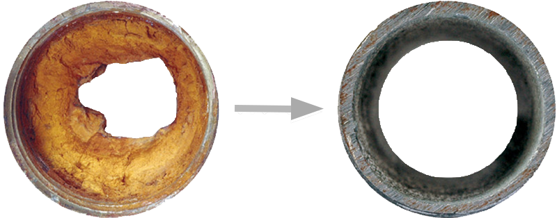

The Eco-Friendly Anti-Scale System
Vulcan is an eco-friendly water treatment system that prevents limescale depositis and rust in your piping system and appliances. The Vulcan-Impulse-Technology is based on the principle of physical water treatment. Special electronic impulses change the crystallization process of the liquid calcium. This way the hard limescale loses its adhesive power. The technology works exclusively with capacitive electric impulses:
NO SALT • NO CHEMICALS • NO MAINTENANCE
• 100% MAGNETISM-FREE
Vulcan Benefits
- No salt or chemicals
- Magnetism-free
- For pipe diameters up to 40″
- Works on every pipe material
- International 25-year warranty
- Quality – Made in Germany
NO SALT • NO CHEMICALS • NO MAINTENANCE
• 100% MAGNETISM-FREE
The 3 Vulcan Effects
-

1. Vulcan reduces scaling on surfaces
Vulcan modifies the crystallization of the calcium. The limescale loses its adhesive power and is washed away with the water as a fine powder.
Read more about the Vulcan technology -

2. Vulcan sanitizes the piping system
Vulcan carefully dissolves existing incrustations in the piping system. Only a thin protective layer remains in the pipe.
Read more about the Vulcan technology -

3. Vulcan protects against rust and corrosion
Vulcan generates a controlled electrophoresis process, which produces a protective metal-carbonate layer. It acts as protection against rust and corrosion.
Read more about the Vulcan technology
10 Reasons for Vulcan
- German 36 Volt Impulse-Technology to control scale in an eco-friendly “green” way.
- The Vulcan impulse bands transfers the impulses into the water. Improved transmission up to 40%.
- The original Vulcan acrylic cast offers maximum protection and keeps all parts secure.
- Vulcan is not magnetic and operates independent of the velocity and constantly provides reliable impulses.
- Material-matching programs: Vulcan treats any pipe material – metal, PVC, plastic, compound pipes, etc.
- In case of a power failure Vulcan automatically resets back to the last active program.
- Vulcan holds certifications by numerous institutions: the German TÜV, the German CE, the UL-approval, etc.
- Vulcan requires very little electrical power. The running costs are approx. USD 3-7 (~3-6 EUR) per year.
- Vulcan is a Made in Germany product that has been manufactured by the Christiani Wassertechnik GmbH.
- 25-year international warranty: The high quality gives Vulcan a life expectancy of 30 years and more.
Quality Made in Germany
- Over 40 years of experience in physical water treatment
- International 25-year product warranty
- Available in more than 70 countries
- Tested by independent institutes
- cULus, TÜV Nord and CE certified
The Vulcan full acrylic cast
The acrylic cast ensures that the circuit board is protected. The parts are fully covered in acrylic. Therefore the parts can not move and are fixed in place. This guarantees a high life expectancy.
The full body acrylic cast protects from dust and dirt e.g. when installed in a basement. The full body acrylic cast protects against heat and protects against coldness as acrylic is a perfect isolating material. E.g. when installed in extremely hot areas with outdoor temperature up to 50°C ( 122 °F) or in very cold temperatures down to -25°C (-13°F).
The acrylic cast ensures a very long product life. The most common cause of a malfunction in electronic devices is that they “blow” when the electricity heats up too much. The thick acrylic covering together with the vacuum prevents heat production. This “cooling” of the unit ensures a long life.
International References
2 weeks after Vulcan was installed in the Coca Cola factory, scale had been softer and fallen out. 48 hours after Vulcan was installed, the filter still stays clean, which normally quickly stuck by scale deposits every 48 hours.
After 6 months scale that had been left in piping had disappeared and all 9 secondary pipes had become clean. The flow rate with the Vulcan unit is now even higher. Biofilm in the cooling tower had disappeared.
The scale in the steamer has been completely turned into powder, so there is no need to open it for cleaning, just by operating the regular drainage function, it can keep the hot water tank clean and free of scale.